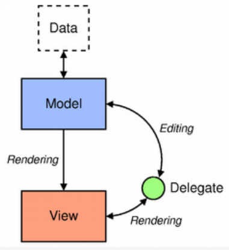

15 Model View Delegate
Model-View-Delegate结构
1.基本概念
Qt中的Model-View-Delegate框架类似于一种前后端分离的架构，将数据的显示与获取进行了分离。其组成如下图所示：
2.Model
2.1基本概念
Model是Model-View-Delegate设计的模式的核心组件之一，它负责存储、检索、更新和操作数据，并通过接口与View和Delegate进行通信。下面详细介绍其概念和作用：
- 数据管理： Model类负责管理应用程序中的数据，Model类通常提供了方法来添加、删除、修改和查询数据，以便在应用程序中进行数据操作。
- 数据提供： Model类向视图（View）提供数据，以便在界面上显示。视图通过与Model类交互来获取所需的数据，并根据数据的变化来更新界面的显示。Model类通常实现了一些接口，如
data()、setData()等，以便视图可以获取和更新数据。 - 通知机制： Model类通常实现了信号-槽机制或其他通知机制，以便在数据发生变化时通知视图进行更新。当数据发生变化时，Model类会自动发出相关信号（比如
dataChanged,rowsInserted等等），告知相关的视图进行相应的更新操作，以确保界面显示的数据与实际数据保持同步。 - 数据格式化和过滤： Model类可以对数据进行格式化和过滤，以适应不同的界面需求。例如，可以通过Model类对数据进行排序、过滤或格式化，以便在界面上以特定的方式显示数据。
- 与数据库的交互： 在与数据库交互的应用程序中，Model类通常用于封装数据库操作，并提供与数据库的接口。Model类负责执行数据库查询、更新、插入和删除等操作，以及处理与数据库相关的错误和异常。
2.2常用类
- QAbstractItemModel：这是Qt中所有Model类的基类，它定义了Model与View之间的通用接口。通常需要继承这个类来创建自定义的Model。
- QAbstractTableModel：这是一个用于实现表格数据模型的抽象基类，可以通过继承它来创建自定义的表格数据模型。
- QAbstractListModel：这是一个用于实现列表数据模型的抽象基类，可以通过继承它来创建自定义的列表数据模型。
- QStandardItemModel：这是一个基于项（Item）的Model，它提供了一个简单的==表格==结构，可以使用行和列来组织数据。每个项都可以包含一个数据项和一些元数据，例如显示样式、状态等。
- QSqlQueryModel：这个Model类用于从SQL数据库中检索数据，并在视图中显示查询结果。它可以执行SQL查询并将结果集作为数据提供给视图。
- QFileSystemModel：该Model类用于表示文件系统的数据结构
- QSortFilterProxyModel：这是一个代理Model，它允许对现有Model数据进行排序、过滤和重排列。它可以作为中间层存在，对原始Model的数据进行处理后再传递给视图显示。
- QDirModel：用于在树形视图中显示文件系统的目录结构。它提供了一个方便的方法来浏览文件系统，可以在树形视图中显示文件和目录的层次结构。QDirModel会自动监视文件系统的变化，并在视图中及时更新以反映这些变化。通常用于文件资源管理器或类似的应用程序中。
- QPixmapModel：用于在视图中显示图像数据。它可以加载图像数据并在视图中以图像的方式显示，通常用于显示图片浏览器或图像查看器中。
2.3数据项的访问
Qt提供了QModelIndex类来对Model的各个数据项进行访问。View类和Delegate类在需要访问Model类时，都需要通过QModelIndex来定位到一个具体的项。
2.4数据项角色
每个数据项可以包含多种角色（Role），这些角色用于描述数据项在不同上下文中的不同用途和含义，Qt中有很多常用的Role：
- Qt::DisplayRole：用于在View中显示数据的基本角色。通常情况下，如果没有为特定角色提供数据，则会默认使用DisplayRole角色的数据来显示数据项。
- Qt::DecorationRole：用于在View中显示图标或装饰物的角色。通常用于在View中为数据项添加图标或其他装饰性的元素。
- Qt::EditRole：用于在View中编辑数据时使用的角色。当用户开始编辑数据时，View会向Model请求使用EditRole角色的数据进行编辑。
- Qt::ToolTipRole：用于在View中显示数据项的提示信息的角色。当鼠标悬停在数据项上时，通常会显示ToolTipRole角色的数据作为提示信息。
- Qt::StatusTipRole：用于在View中显示数据项的状态提示信息的角色。类似于ToolTipRole，但通常用于显示更长或更详细的状态信息。
- Qt::FontRole：用于在View中指定数据项的字体的角色。通过为FontRole提供数据，可以实现对特定数据项的字体样式定制。
这些Role具体怎么使用呢？
数据项的使用一般是通过自定义模型，并重写其data()来使用，在获取数据时，通常需要指定Role，这样Model就会返回符合相应角色的数据。
1 | QVariant data(const QModelIndex &index, int role) const override |
在设置数据时，一般也要指定Role
1 | model->setData(index, value, Qt::EditRole); |
从图中可以看到，指定不同的Role，获取到的数据是不同的
3.View
3.1基本概念
View类用于以某种布局显示Model中的数据，并允许用户与数据进行交互。
- 显示数据：View类负责在界面上显示Model中的数据。它们可以以表格、列表、树形等不同的方式呈现数据，根据数据的结构和需要选择合适的显示方式。
- 交互功能：View类允许用户与数据进行交互。用户可以通过View类提供的各种交互功能来对数据进行操作，例如选择、编辑、排序、过滤等。
- 与Model的关联：View类与Model类之间通常是通过Model-View架构进行关联的。View类通过与Model类的关联，从Model中获取数据并将其显示在界面上。当Model中的数据发生变化时，View类会相应地更新界面以反映这些变化。
- 提供样式和外观：View类通常提供了一些样式和外观的设置选项，允许开发者自定义界面的外观和布局。这些选项可以用来调整视图的样式、颜色、字体等，以满足特定的设计需求。
- 支持多种数据展示方式：Qt提供了多种View类，每种View类都有不同的数据展示方式。例如，QTableView用于显示表格数据，QListView用于显示列表数据，QTreeView用于显示树形数据等。
3.2常用类
Qt提供了多种用于显示数据的View类，其中一些常见的包括：
- QAbstractItemView：抽象基类，为各种视图提供了共同的接口和功能。
- QListView：用于显示单列数据项的列表视图。
- QTableView：用于显示二维表格数据的表格视图。
- QTreeView：用于显示树形结构数据的树视图。
- QColumnView：用于显示数据以列的形式组织的视图。
- QHeaderView：用于显示表格或列表视图的列标题和行标题。
3.3常用信号
上面提到了View可以提供与用于交互的能力，实际上，这是通过当用户与其交互时，他会发出一些信号来实现的
QAbstractItemView提供了以下信号：
- **clicked(const QModelIndex &index)**：当用户单击视图中的项时发射的信号，传递了被点击项的索引。
- **doubleClicked(const QModelIndex &index)**：当用户双击视图中的项时发射的信号，传递了被双击项的索引。
- **activated(const QModelIndex &index)**：当用户激活视图中的项时（例如按下 Enter 键），发射的信号，传递了被激活项的索引。
- **pressed(const QModelIndex &index)**：当用户按下视图中的项时发射的信号，传递了被按下项的索引。
- **viewportEntered(const QModelIndex &index)**：当鼠标光标进入视图中的项时发射的信号，传递了光标进入的项的索引。
- **selectionChanged(const QItemSelection &selected, const QItemSelection &deselected)**：当选择发生变化时发射的信号，传递了新的选择和取消选择的项目。
- **entered(const QModelIndex &index)**：当鼠标进入视图中的项时发射的信号，传递了进入的项的索引。
- **activated(const QModelIndex &index)**：当用户激活视图中的项时（例如按下 Enter 键），发射的信号，传递了被激活项的索引。
- **iconSizeChanged(const QSize &size)**：当图标大小发生变化时发射的信号，传递了新的图标大小。
- **keyboardSearch(const QString &search)**：当用户在视图中键入文本以搜索项目时发射的信号，传递了用户输入的搜索文本。
4.Delegate
4.1基本概念
Delegate类用于定制化View的特定项目的显示和交互。View本身提供了一些内置的交互功能，比如选择、编辑、排序等，但有时我们需要定制化，比如单元格编辑时使用QSpinbox来编辑、View显示时，个别item的单元格的颜色需要修改….其具体功能如下：
- 定制项目的显示样式：可以根据需求自定义每个项目的显示效果，包括背景色、文本样式、图标等。
- 定制项目的交互行为：可以根据需求自定义每个项目的交互行为，例如点击、双击、拖拽等操作。
- 定制项目的编辑功能：可以根据需求自定义每个项目的编辑功能，例如在项目上直接编辑文本或者选择不同的编辑器来编辑项目。
- 定制项目的复选框、按钮等控件：可以在项目中添加复选框、按钮等控件，并实现相应的交互逻辑。
4.2常见类
- QAbstractItemDelegate：是一个抽象基类，用于创建自定义的ItemDelegate。通过继承QAbstractItemDelegate并实现其虚函数，开发者可以创建特定需求的自定义Delegate。
- QItemDelegate：是Qt中用于定制单元格（item）的显示和编辑的基类。通过继承QItemDelegate类，开发者可以自定义单元格的显示方式，例如显示不同的字体、颜色、图标等，以及实现自定义的编辑器。
- QStyledItemDelegate：是QItemDelegate的子类，提供了更灵活的样式化支持。它可以绘制更复杂的单元格样式，并且可以使用样式表（StyleSheet）来定义单元格的外观。QStyledItemDelegate通常用于定制QListView和QTableView中的单元格样式。
- QComboBoxDelegate：是用于在View中显示下拉框（ComboBox）的Delegate类。它可以用于在表格或列表中的特定单元格中显示下拉框，并允许用户从预定义的选项中选择数据。
4.3使用方法
1.定制单元格的显示方法：
- 重写Delegate的
paint()方法
2.定制编辑时单元格的样式：
- 重写
createEditor()方法
3.定制编辑数据输入的方法：
- 重写
setEditorData()方法
4.定制根据前端输入设置Model对应数据的方法：
- 重写
setModelData()方法